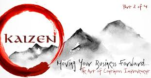

Kaizen is a competitive strategy in which all employees work together to create a strong culture of constant improvement.
author Name :
dilip kumar sori
date: 13/03/2026

In Kaizen, it doesn't matter whether the change happens at once or is a constant, whether the change is big or small, as long as it is a change for the better. Learn everything you need to know about the Kaizen method and philosophy. Kaizen is a business philosophy that focuses on continuous improvement across the entire organization. The kaizen model helps companies focus on gradually and consistently increasing efficiency and reducing waste within processes. To do this, kaizen encourages input from any employee — from the factory floor to the C-suite — at any time.